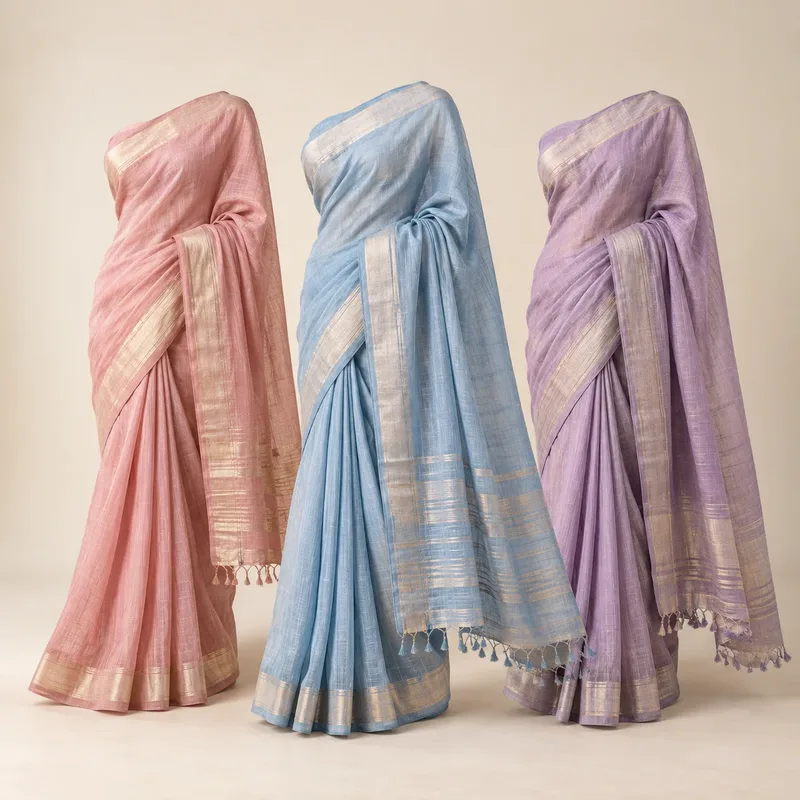

Designing colour for Indian skin tones
Undertones, contrast and how to present colour so it flatters a wide range of customers.

India's customers span a wide range of skin tones. Thinking about undertone and contrast helps colour stories work for more people.
Undertones
Warm undertones often glow in earthy colours, golds and warm reds; cool undertones often suit blues, emerald and berry tones. Many people sit in between and can wear both.
Contrast
High-contrast colour combinations can feel bold; tonal looks feel softer. Offering both options in a capsule widens its appeal.
Show it on real people
Photograph key colours on models with different skin tones. It is the simplest way to help customers imagine the colour on themselves.